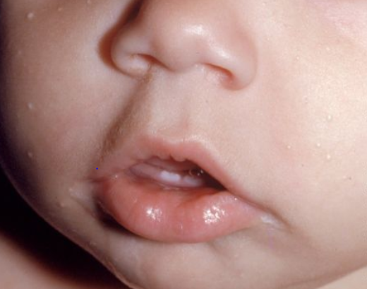

It is hard when your baby is sick. Common health problems in babies include colds, coughs, fevers, and vomiting. Babies also commonly have skin problems, like diaper rash or cradle cap.
Many of these problems are not serious. It is important to know how to help your sick baby, and to know the warning signs for more serious problems. Trust your intuition - if you are worried about your baby, call your health care provider right away.